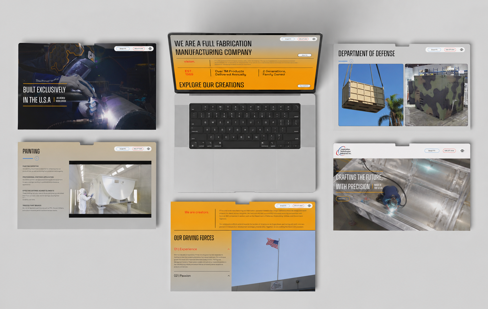

A Measured Force partnered with Fabrication Technologies Industries (FTI), a full-scale manufacturing and fabrication operation based in San Diego that designs and builds for clients worldwide, including Fortune 500 firms across defense, shipbuilding, utilities, and government. AMF led creative direction and brought FTI's story to life through web design, copywriting, photography, and videography.
Fab Tech
A digital presence for a global manufacturing and fabrication company, built to translate deep technical capability into a clear, modern experience.
Explore Website

FTI's greatest strength, its deep and wide-ranging technical capability, was also its hardest thing to communicate. The work needed to translate dense, technical content into a clear and engaging digital experience that performed seamlessly across every device.


AMF directed the full project across web design, copywriting, and original on-site photography and videography. To handle FTI's dense technical content, AMF partnered with an engineer to develop custom-coded pages, including a Department Capabilities section built with advanced nested structures, and refined the responsive design for a seamless experience on every device.
The result is a website that communicates FTI's scale and expertise and positions the company as a global leader with a modern, compelling digital presence.

- 01Manufacturing company website
- 02Creative direction
- 03Web design and copywriting
- 04Original photography and videography
- 05Custom-coded technical pages
- 06Fully responsive build